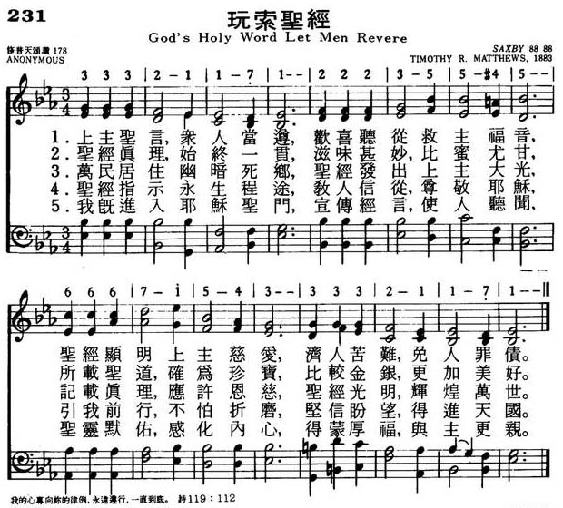

|
|
|
|
|
231思索圣经
1.上主圣言，众人当遵，欢喜听从救主福音，
圣经显明上主慈爱，济人苦难，免人罪债。 2.圣经真理，始终一贯，滋味甚妙，比蜜尤甘， 所载圣经，确为珍宝，比较金银，更加美好。 3.万民居住，幽暗死乡，圣经发出上主大光， 记载真理，应许恩慈，圣经光明，辉煌万世。 4.圣经指示永生程途，教人信从，尊敬耶稣， 引我前行，不怕折磨，坚信盼望，得进天国。 5.我既进入耶稣圣门，宣传经言，使人听闻， 圣经默佑，感化内心，得蒙厚福，与主更亲。 |
|
https://www.mred365.cn/szxg/7234.html
 SAXBY (Matthews) https://hymnary.org/tune/saxby_matthews
|
|
|
|
|
.jpg)

To Thee, O Lord, I Humbly Cry (Saxby) https://youtu.be/j1KhjibXUD4
LX1553
God'S Holy Word Let Men
Revere
231思索圣经
Tune Information
| Title: | SAXBY (Matthews) |
| Composer: | Timothy R. Matthews (1883) |
| Meter: | 8.8.8.8 |
| Incipit: | 33321 17122 23554 |
| Key: | E♭ Major |
| Copyright: | Public Domain |
| Short Name: | Timothy R. Matthews |
| Full Name: | Matthews, Timothy R., 1826-1910 |
| Birth Year: | 1826 |
| Death Year: | 1910 |
Timothy Richard Matthews
MusB United Kingdom 1826-1910. Born at Colmworth, England, son of the Colmworth rector, he attended the Bedford and Gonville Schools and Caius College, Cambridge. In 1853 he became a private tutor to the family of Rev Lord Wriothesley Russell, a canon of St. George’s Chapel, Windsor Castle, where he studied under organist, George Elvey, subsequently a lifelong friend. He married Margaret Mary Thompson, and they had 11 children: Norton, Mary, George, Cecil, Evelyn, Eleanor, Anne, Arthur, Wilfred, Stephen, and John. Matthews served as Curate and Curate-in-Charge of St Mary’s Church, Nottingham (1853-1869). While there, he founded the Nottingham Working Men’s Institute. He became Rector at North Coates, Lincolnshire (1869-1907). He retired in 1907 to live with his eldest son, Norton, at Tetney vicarage. He edited the “North Coates supplemental tune book” and “Village organist”. An author, arranger, and editor, he composed morning and evening services, chants, and responses, earning a reputation for simple but effective hymn tunes, writing 100+. On a request he wrote six tunes for a children’s hymnal in one day. He composed a Christmas carol and a few songs. His sons, Norton, and Arthur, were also known as hymn tune composers. He died at Tetney, Lincolnshire, England.
John Perry